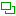

可停靠对话框⇨绘画动态
没有快捷键。
可停靠对话框⇨绘画动态
此对话框中包括所有可用的预设动态。
动态绘图功能(  )可以把笔刷参数与笔刷的使用方式联系起来，结果是让笔刷更具有“真实感”。例如：
)可以把笔刷参数与笔刷的使用方式联系起来，结果是让笔刷更具有“真实感”。例如：
让笔划宽度随着手写笔的速度不同而产生粗细变化；
让色彩饱和度随着手写笔的压力不同而产生饱和度变化；
让颜色随着手写笔书写方向的不同而产生色相变化，等等。
您可以直接使用已经定义好参数的预设，也可以创建自定义预设。
(动态绘图功能主要是为了使用绘图板而创建的，但有一些动态绘图功能也可以用在鼠标上)
动态绘图对话框
默认情况下，对话框中会显示预设列表，最左侧是表示动态的图标(
)，图标右侧是动态的名称，再右侧的滚动条可以上下滚动列表。列表上方的 过滤 用来对所有动态进行分类，点击 过滤 框内右侧的(
 )按钮即可显示类别。
)按钮即可显示类别。列表下方的 输入标签 会自动显示被选中动态的类别；您也可以在这里创建新类别，方法是选中某个要修改类别的动态，然后删除下方框中的内容，再输入新的类别名称，此时选中的动态的类别就会改为新创建的类别；然后，点击上方框中的(
)按钮可以选择新创建的类别。对话框底部有五个按钮，可以对动态进行管理。
(
 )编辑：点击会打开 动态绘图编辑器，可以对当前选中的动态进行编辑。GIMP自带的动态不允许编辑；但您可以复制GIMP自带的动态，然后对其副本进行编辑。
)编辑：点击会打开 动态绘图编辑器，可以对当前选中的动态进行编辑。GIMP自带的动态不允许编辑；但您可以复制GIMP自带的动态，然后对其副本进行编辑。(
 )新建：点击会打开 动态绘图编辑器，可以创建新的动态。详细操作说明请参考动态绘图编辑器。
)新建：点击会打开 动态绘图编辑器，可以创建新的动态。详细操作说明请参考动态绘图编辑器。(  )复制：点击会打开 动态绘图编辑器，自动创建当前选中动态的副本，您可以在编辑器中修改动态的参数。详细操作说明请参考动态绘图编辑器。
(
 )删除：点击会删除当前选中的动态。GIMP自带的动态无法删除，您自己创建或复制的动态可以删除。
)删除：点击会删除当前选中的动态。GIMP自带的动态无法删除，您自己创建或复制的动态可以删除。
{kind=link}
警告
此命令不仅会删除对话框中的动态，同时还会删除硬盘上动态文件夹中的动态文件，请慎重操作！
(
 )刷新：重新加载动态。如果您往动态文件夹中拷贝了新的动态文件，那么点击此按钮就可以把新动态加载到动态对话框中使用，不需要重启GIMP。
)刷新：重新加载动态。如果您往动态文件夹中拷贝了新的动态文件，那么点击此按钮就可以把新动态加载到动态对话框中使用，不需要重启GIMP。